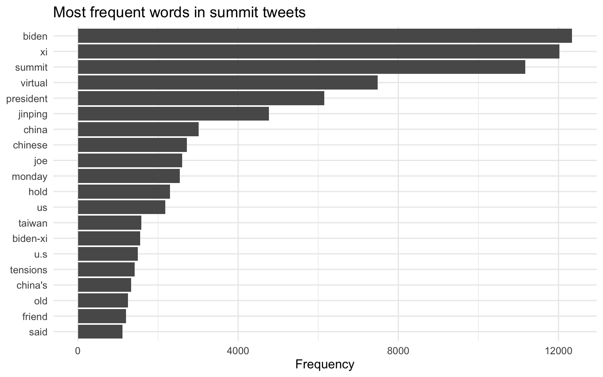
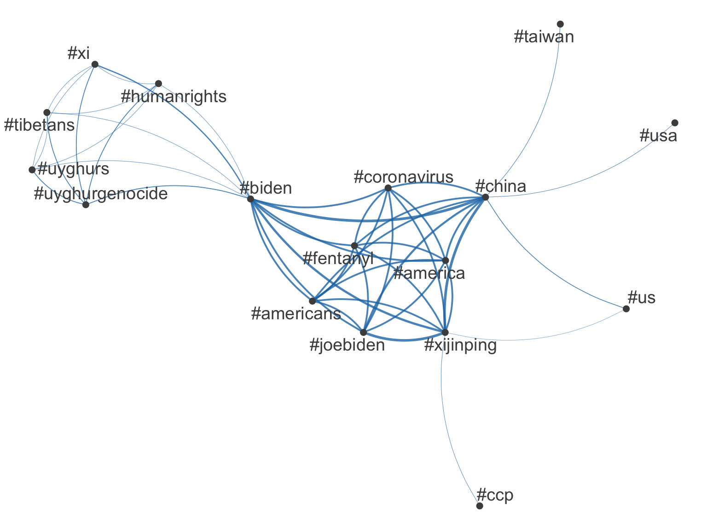
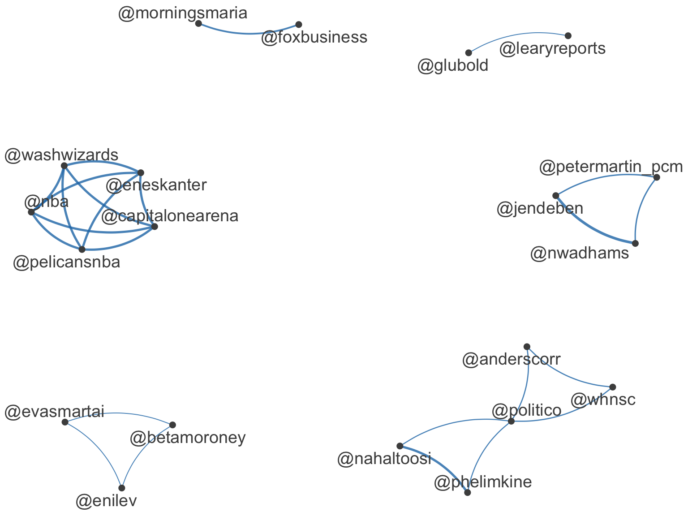
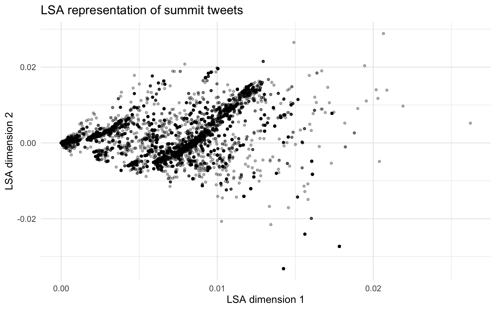
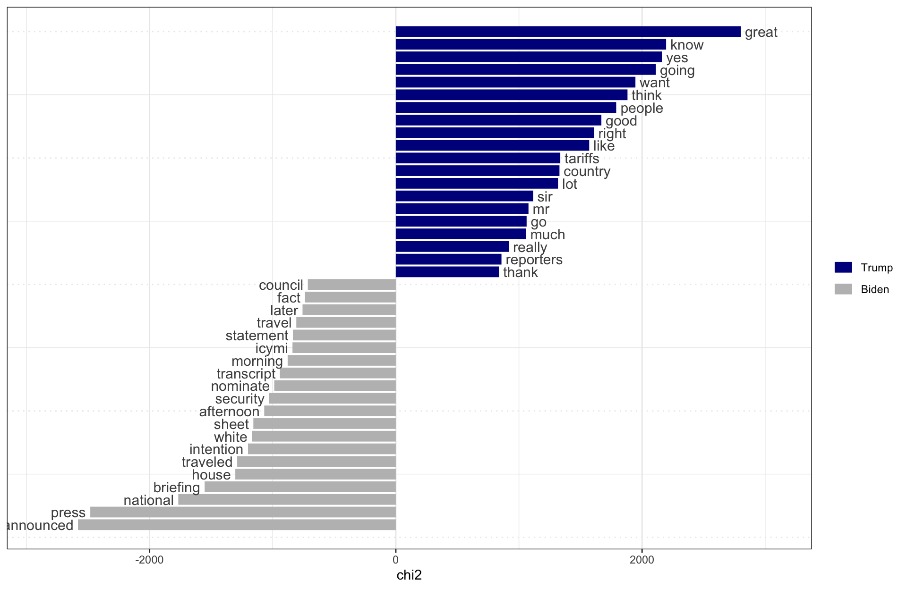
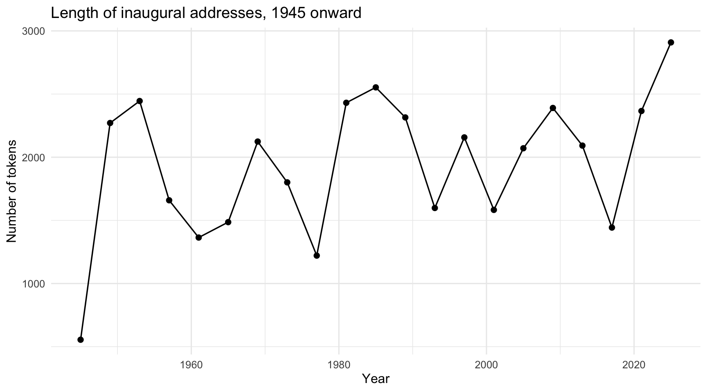
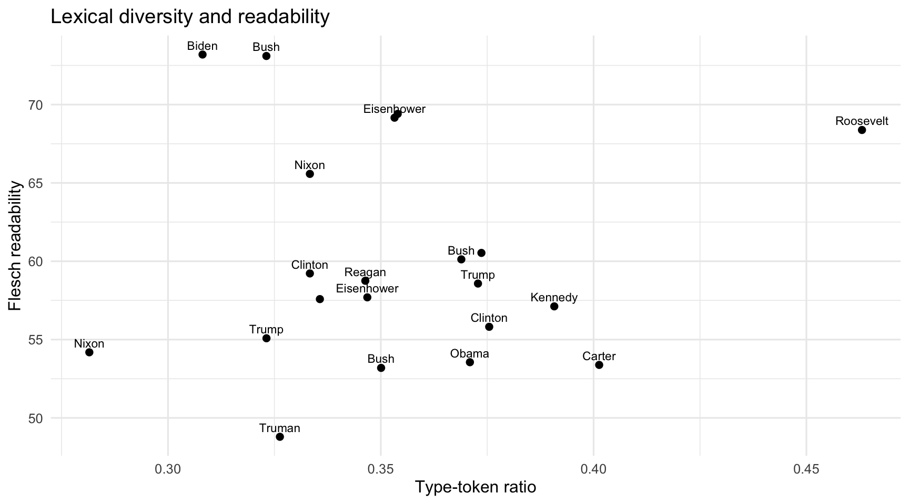
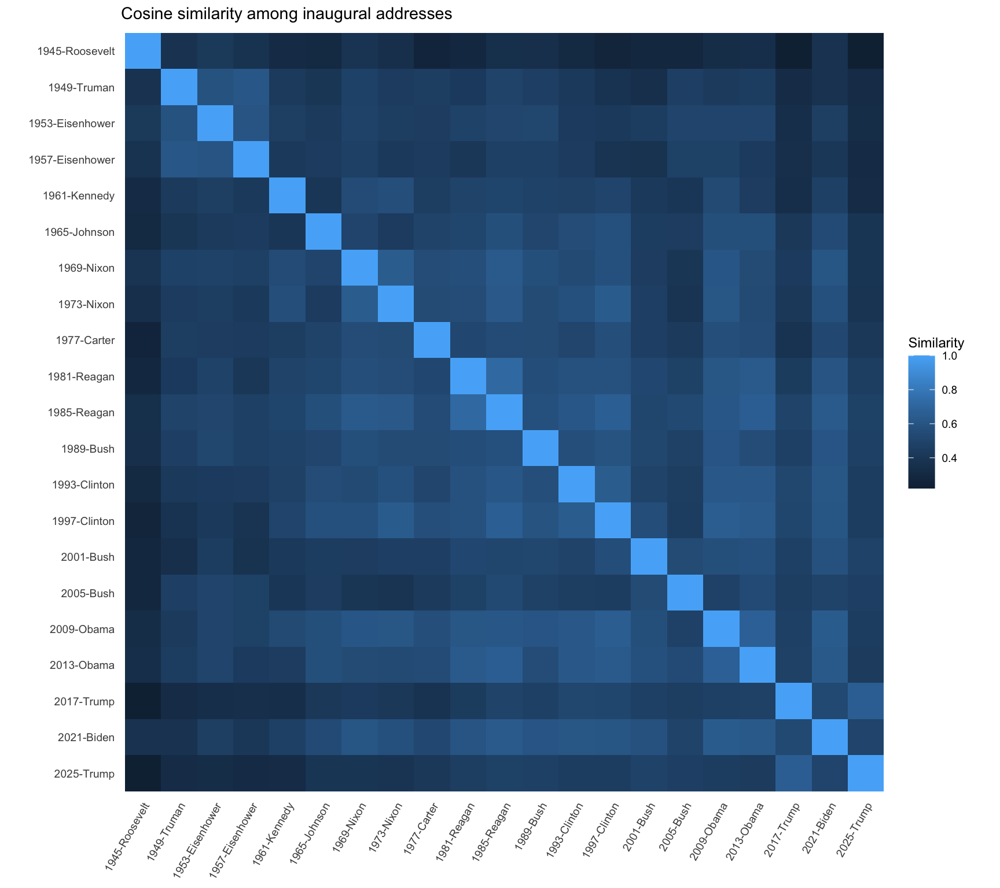
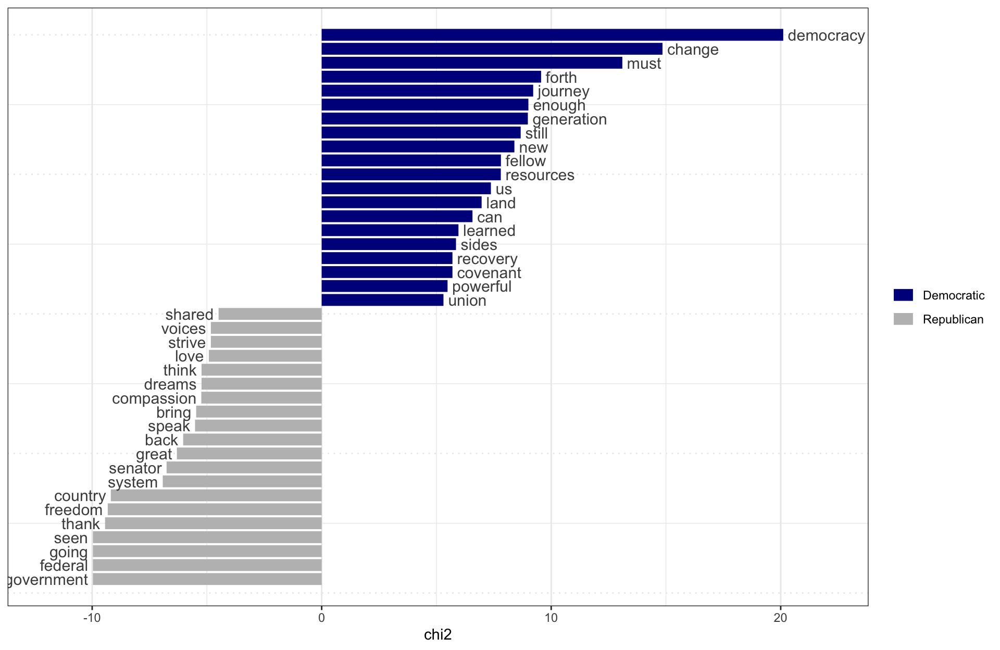
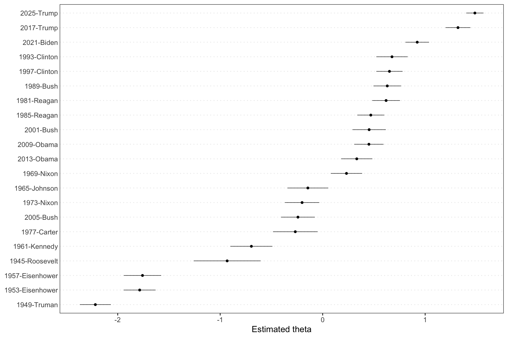

Assignment 6: Text Analytics with quanteda
Part 1. Public text: tweets from the 2021 Biden–Xi summit
The first corpus is an archived set of tweets collected during the November 2021 Biden–Xi summit. Because the API access that produced this dataset is no longer available in the same form, the corpus can be analyzed but cannot simply be recollected today. Its interpretation therefore depends on the original keyword strategy and collection window rather than representing all public opinion about the summit.
The archived corpus contains 14,520 tweets collected around the 2021 Biden–Xi summit.
Frequent words
The most frequent vocabulary is dominated by the two presidents, the summit itself, China, and terms connected with the virtual meeting. This provides a simple overview of what was most visible in the collected discussion, although frequency alone does not indicate whether a term was used positively or negatively.
Hashtag network

The hashtag network shows clusters of terms that appeared together. Central hashtags such as those referring to Biden, China, and Xi connect the summit to broader political and human-rights discussions.
Mention network

Unlike the hashtag network, the mention network is more fragmented. This indicates that frequently mentioned accounts did not form one single communication cluster in the archived dataset.
Latent Semantic Analysis

The LSA representation summarizes similarities in word use across thousands of tweets. The visible clusters suggest recurring patterns of language, although the latent dimensions themselves do not have an automatic substantive interpretation.
Overall, the tweet corpus captures immediate public communication around the summit. It should not be treated as a representative sample of U.S. or global public opinion because the original query and collection period determined which tweets entered the dataset, participation on Twitter/X is selective, and highly active users can contribute disproportionately.
Part 2. Government text: Compilation of Presidential Documents
The second corpus comes from the Compilation of Presidential Documents (CPD) in GovInfo. The earlier collection produced 343 search results for documents mentioning “Xi Jinping” from January 20, 2021 onward.
The saved GovInfo search contains 343 CPD records.
Retrieve the document text
GovInfo provides predictable public HTML links for individual Daily Compilation documents. The document texts are stored locally in a private folder that is excluded from the public repository. Only the collection manifest and retrieval log are published.
343 of 343 documents were available as usable public HTML text.
Public reproducibility files:
Build the CPD corpus
The analysis corpus contains 343 documents with usable text.
| Administration | Documents |
|---|---|
| Biden | 183 |
| Trump | 160 |
“Xi Jinping” in context
| Document | Before | Keyword | After |
|---|---|---|---|
| DCPD-202600598 | deadly synthetic drugs . I have raised this directly with State Chairman | Xi Jinping | , and in 2025 , at my request , the PRC implemented |
| DCPD-202600575 | China and us . Thank you very much , everybody . President | Xi Jinping | of China Q . On China , Mr . President . On |
| DCPD-202600489 | he referred to Acting President Delcy Rodriguez Gomez of Venezuela ; President | Xi Jinping | of China ; President Vladimir Vladimirovich Putin of Russia ; Vice President |
| DCPD-202600342 | J . Trump , 2026 Remarks Prior to a Tea With President | Xi Jinping | of China in Beijing , China May 15 , 2026 President Xi |
| DCPD-202600341 | J . Trump , 2026 Remarks at a State Banquet With President | Xi Jinping | of China in Beijing , China May 14 , 2026 President Xi |
| DCPD-202600341 | his remarks , he referred to Peng Liyuan , wife of President | Xi Jinping | of China . President Xi and a moderator spoke in Chinese , |
| DCPD-202600338 | J . Trump , 2026 Remarks Prior to a Meeting With President | Xi Jinping | of China in Beijing , China May 14 , 2026 President Xi |
| DCPD-202600249 | are coming from—predominantly going to China , Mr . President . Have—has | Xi Jinping | reached out ? I know you’re going to be meeting with him |
The keyword-in-context examples show how references to Xi Jinping appear within official presidential language. Metadata-style subject listings and several administrative or index-like contexts were excluded from the displayed examples so that the table focuses more closely on substantive textual context.
Biden–Trump keyness

The keyness comparison identifies vocabulary that is disproportionately associated with Trump-era versus Biden-era CPD documents in this corpus. Very short artifacts and the presidents’ own surnames were removed so that the comparison emphasizes more substantively useful differences in official language.
The CPD corpus answers a different question from the tweets. It consists of official government texts selected first by inclusion in the Compilation of Presidential Documents and again by the GovInfo search for Xi Jinping. KWIC reveals how Xi is discussed in context, while keyness identifies vocabulary that is disproportionately associated with one administration relative to the other. These patterns describe official presidential communication in the collected corpus; they do not provide a neutral record of U.S.–China relations, private deliberations, or public opinion.
Part 3. U.S. presidential inaugural addresses, 1945 onward
The third corpus is generated by the institutional tradition of presidential inaugural addresses rather than by an API search or keyword-based collection window.
The corpus contains 21 inaugural addresses from 1945 through 2025.
Length, lexical diversity, and readability

The length of inaugural addresses varies substantially across presidents and years rather than following a simple linear historical trend.

Lexical diversity and readability capture different characteristics of presidential rhetoric. A speech can use a varied vocabulary without necessarily being easier to read, and vice versa.
Cosine similarity among inaugural addresses

The heatmap makes pairwise similarity easier to compare than a full numeric matrix. Lighter cells indicate higher cosine similarity, while darker cells indicate lower similarity.
Keyness by party

Party keyness identifies vocabulary that occurs disproportionately in Democratic versus Republican inaugural addresses. These associations are descriptive features of this corpus and should not automatically be treated as direct measures of ideology.
Is the 2025 address included?
Yes. The installed inaugural corpus includes the 2025 Trump inaugural address. No additional document is required.
Part 4. Wordfish
Wordfish treats word counts as generated by a statistical model in which documents occupy positions on a latent dimension and words differ in how strongly they discriminate along that dimension.

| Address | Year | President | Estimated position |
|---|---|---|---|
| 1949-Truman | 1949 | Truman | -2.22 |
| 1953-Eisenhower | 1953 | Eisenhower | -1.79 |
| 1957-Eisenhower | 1957 | Eisenhower | -1.76 |
| 2021-Biden | 2021 | Biden | 0.92 |
| 2017-Trump | 2017 | Trump | 1.32 |
| 2025-Trump | 2025 | Trump | 1.49 |
Wordfish estimates a latent textual dimension rather than an automatically labeled left–right ideological scale. In this corpus, the ordering appears to capture a substantial temporal or historical shift in inaugural rhetoric: earlier addresses, especially those from Truman and Eisenhower, are located toward the negative end, while recent addresses, including Biden and both Trump addresses, are located toward the positive end. Because presidents from different parties appear on the same side of the scale, the dimension does not appear to represent simple partisan ideology. Its substantive meaning would need to be validated by examining the words with the strongest discrimination parameters and comparing the estimated positions with external historical or independently coded measures. The direction argument is necessary because the sign of a one-dimensional latent scale is arbitrary: the same relative configuration could otherwise appear with all signs reversed. Fixing the direction makes the orientation reproducible but does not change the relative distances among documents.
Short report
The three corpora in this assignment illustrate why text analysis must be interpreted together with the process that generated the data. The archived summit tweets were produced by individual users and collected during a particular period around the November 2021 Biden–Xi meeting. Frequent-word counts summarize recurring vocabulary, hashtag and mention networks show which labels and accounts appeared together, and latent semantic analysis reduces high-dimensional word-use patterns to a smaller set of dimensions. These tools are useful for describing communication on the platform during the collection window. They cannot, however, be treated as a representative measure of U.S. or global public opinion. The original keyword query determined which tweets could enter the corpus, Twitter/X users are a selective population, and highly active accounts can contribute many more observations than ordinary users.
The CPD corpus represents a very different data-generating process. These texts are official presidential documents included in the Compilation of Presidential Documents and then selected again by my GovInfo query for the exact phrase “Xi Jinping” from January 20, 2021 onward. The document texts were obtained from GovInfo’s public HTML renditions using the package identifiers retained in the collection manifest. KWIC is useful because it shows the words immediately surrounding each occurrence of Xi’s name rather than reducing those references to isolated counts. Keyness compares vocabulary that is relatively more characteristic of the Biden and Trump administrations within the retrieved corpus. These patterns support claims about differences in official presidential communication, but not about private policy deliberations, the complete content of U.S. foreign policy, or all government communication about China. Differences in the number and type of documents produced by each administration can also affect the comparison.
The inaugural-address corpus is more structured because the documents are generated by a recurring political and ceremonial tradition rather than by a keyword search. Restricting the corpus to 1945 onward permits comparisons across modern presidents using several complementary measures. Document length describes the amount of text, lexical diversity captures variation in vocabulary, readability summarizes textual complexity, cosine similarity compares distributions of words across speeches, and party keyness identifies vocabulary used disproportionately in Democratic or Republican inaugural addresses. The similarity heatmap makes the pairwise comparisons visible without treating the entire numeric matrix as a substantive result. None of these measures by itself proves ideological differences because inaugural language also reflects historical context, individual style, and the ceremonial purpose of the speech.
Wordfish provides a different kind of comparison. It is an unsupervised scaling model that uses word counts to estimate each document’s position on a latent textual dimension. The model assumes that document positions and word-specific parameters help generate observed word frequencies. In the estimated results, the dimension appears to reflect a substantial temporal or historical shift in inaugural rhetoric: earlier speeches such as Truman’s and Eisenhower’s appear toward one end, while recent speeches by Biden and Trump appear toward the other. Because presidents from both parties occupy similar regions of the scale, the dimension does not appear to represent a simple Democratic–Republican ideological divide. This interpretation would still require validation by examining highly discriminating words and comparing the estimated positions with external historical or independently coded measures. The direction setting is needed for identification because the sign of a one-dimensional latent scale is arbitrary.
Overall, quanteda provides useful and reproducible tools for summarizing large text collections, but the interpretation of those summaries depends on how each corpus was produced. The tweets provide a window into platform-based public communication around a particular event, the CPD documents provide a window into selected official presidential communication, and the inaugural addresses provide a structured historical series of ceremonial rhetoric. Claims from each analysis should remain tied to those source populations and selection mechanisms.
Data note for the CPD collection
Source. GovInfo, Compilation of Presidential Documents.
Access. CPD records and document renditions are publicly accessible through GovInfo. The analysis uses the previously collected search manifest and GovInfo’s predictable public HTML document links. No API key or downloaded document text is published.
Query.
collection:(CPD) AND "Xi Jinping" AND publishdate:range(2021-01-20,)Selection. The search retrieves CPD records mentioning the exact phrase “Xi Jinping” from January 20, 2021 onward. The earlier collection returned 343 records. The package identifier for each search result is retained in the manifest and used to retrieve the corresponding public HTML rendition.
Gaps and limitations. The collection includes only material indexed in CPD and only documents matched by the query. It can miss references that use other names or descriptions, documents outside CPD, and material not captured by GovInfo’s indexing process. Search results also depend on the database state at the time of collection. The public manifest and retrieval log document what was selected and successfully retrieved, while the document texts themselves remain in a private local folder.
AI Use Disclosure
Generative AI was used to support R coding and debugging, organization, and wording. I reviewed the assignment requirements, analysis workflow, interpretations, and final submission materials against the actual R output before submission.